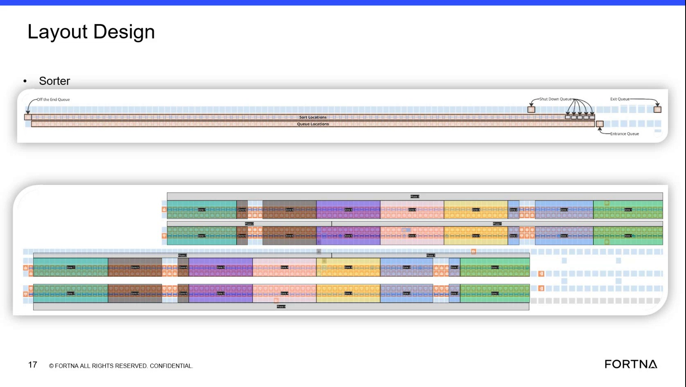

| Procedure ID | proc_verify_sorter_queue_routing_entrance_to_shutdown_v1 |
|---|---|
| Title | Verify Sorter Queue Routing: Entrance Queue → Queue Locations → Sorter Queue Locations → Exit Queue → Shutdown Queues |
| Procedure Type | diagnostic |
| Primary Role | L1_support |
| Support Safe | Yes |
| Capability Tags | robot_dwell_or_shutdown_staging |
| Access Surface | rms_ui, site_interview |
| Audience Roles | L1_support, operator |
| Failure Pattern Tags | sort_lifecycle_stuck, zone_agv_mismatch |
| Validation Status | needs_sme_review |
| Merge Status | source_finalized |
Use the live sorter layout view (via RMS / fleet status UI when available, or site visual confirmation) to verify that AGVs/totes follow the documented sorter queue routing sequence: entrance queue first, then exchange staging (queue locations), then sorter queue locations for tote pickup/aisle entry, then exit queue after exchange, and finally shutdown queue positioning based on tote presence (including the 'off the end' path when entering shutdown from the entrance with a tote).
When you need to confirm that sorter queue routing is behaving correctly during normal sorter flow and during shutdown entry, specifically validating the expected queue-to-queue transitions and tote-dependent shutdown positioning.

Responsible role: L1_support
Instruction:
In the live sorter layout view available to support (RMS / fleet status UI when available), identify the following queue areas: entrance queue; queue locations (exchange staging); sorter queue locations (tote pickup / aisle entry); exit queue; shutdown queues (including under-rack shutdown locations for AGVs without totes and the shutdown location for AGVs with totes). If the live layout does not clearly label these areas, use site interview / visual confirmation to map the live labels to these documented queue-area names.
Expected result:
You can point to (or otherwise map) each of the named queue areas in the live view: entrance queue, queue locations for exchange staging, sorter queue locations for tote pickup/aisle entry, exit queue, and shutdown queues with tote-dependent positioning.
Stop or Escalate If:
Responsible role: L1_support
Instruction:
Observe an AGV/tote that is entering the sorter area in the live view and confirm it first appears in the entrance queue.
Expected result:
The observed AGV/tote appears first in the entrance queue (no bypass to later queue areas).
Stop or Escalate If:
Responsible role: L1_support
Instruction:
After the entrance queue, confirm the same AGV/tote transitions to the queue locations area where AGVs stage behind for an exchange.
Expected result:
The observed AGV/tote moves from the entrance queue into the queue locations (exchange staging) area.
Stop or Escalate If:
Responsible role: L1_support
Instruction:
Confirm that after exchange staging, the tote is picked up at the sorter queue locations (the area described as where you pick up the tote and leave into the aisle).
Expected result:
The observed item reaches the sorter queue locations area where tote pickup/aisle entry occurs.
Stop or Escalate If:
Responsible role: L1_support
Instruction:
After an exchange, confirm the AGV/tote goes to the exit queue (described as where it goes as it leaves before it could go to anywhere else for shutdown).
Expected result:
The observed item transitions to the exit queue after exchange.
Stop or Escalate If:
Responsible role: L1_support
Instruction:
When the system is in shutdown, confirm shutdown queue positioning based on tote presence: observe AGVs without totes moving to shutdown locations under the rack, and observe AGVs with totes moving to the shutdown location described as “for AGVs with Tots.”
Expected result:
In shutdown, the observed AGV/tote ends up in the correct shutdown location corresponding to whether a tote is present.
Stop or Escalate If:
Responsible role: L1_support
Instruction:
If entering shutdown from the entrance while a tote is present, confirm the documented 'off the end' path occurs before the shutdown location (entrance → off the end → shutdown).
Expected result:
For a tote-present item entering shutdown from the entrance, the item is observed at the 'off the end' location before it reaches the shutdown location.
Stop or Escalate If: